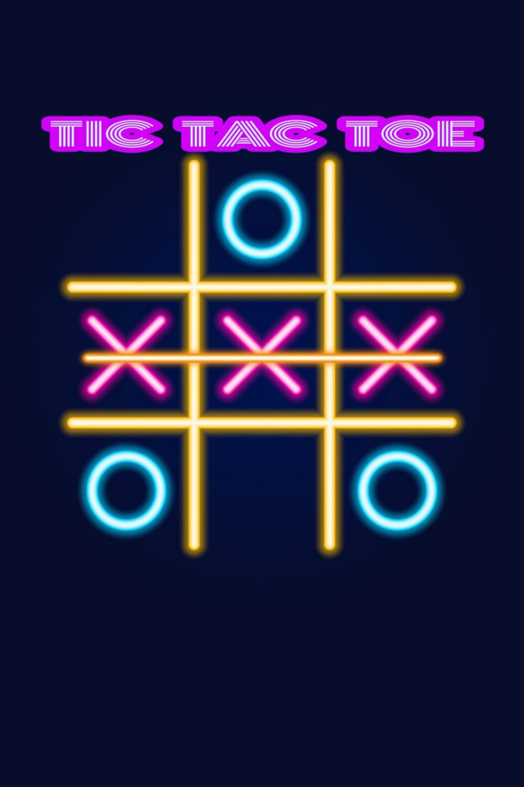
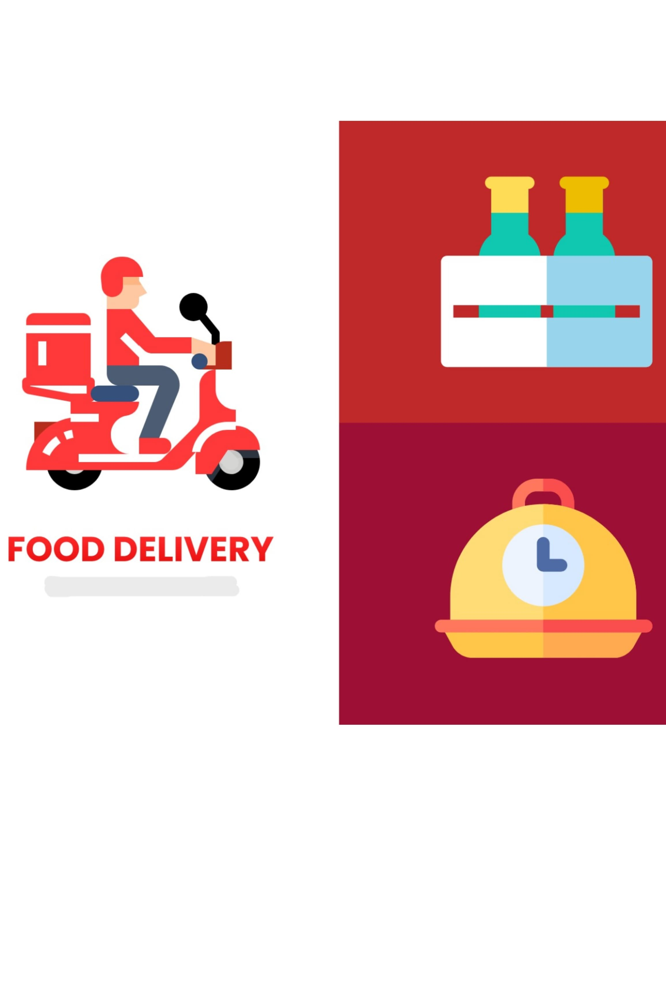

This is my personal portfolio Website which is designed and
built using JavaScript, HTML and CSS.
Weather Application
It is a APIs Based Weather Application that is built for
real-time weather information of any city using JavaScript, HTML
and CSS.
JobSearch
This is a a job search web website that is developed using
React, Node.js, Express.js, MongoDB, providing seamless user
experience , users to search and apply for jobs on-the-go.

Tic Tac Toe
It is a two-player game in which the objective is to take turns
and mark the correct spaces in a 3x3 grid which is designed
using JavaScript, HTML and CSS.
ToDo List
This website is designed and developed for tasks management
functionality for seamless user experience using JavaScript,
HTML and CSS.

Online Food Ordering Website
This is a design of a website which is designed and developed
for ordering food through online mode using HTML and CSS .